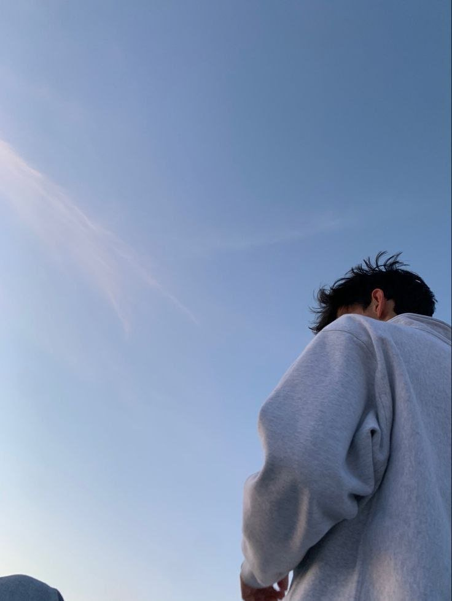

Kompyuterga qiziqish
IT sohasiga birinchi qadam — o'rganish va tajriba olish boshlandi.
Salom, men
Marketolog · Grafik dizayner · Dasturchi
Uzum Market sohasida 1,5 yillik tajribaga ega — sotuv menejeri va video/foto montajchi sifatida ishlaganman. Hozirda kompyuter texnologiyalari va DevOps yo'nalishida o'z bilimimni oshirib bormoqdaman.

Men Namangan viloyati, Toraqorg'on tumanidanman. 7-sinfdan kompyuter sohasiga qiziqib, uni mukammal o'rganishga harakat qilib kelganman.
Birinchi kompyuter ishlarimni 9-sinfda boshladim — onlayn platformalarda Upwork va Instagram orqali ishladim. Birinchi qilgan ishim logotip yaratish edi.
Keyin Uzum Marketda ish boshladim: foto/video montaj qilib, kartochkalar yaratdim, ularni onlayn platformalarga joyladim va yaxshi daromad qildim.
Savdo menejeri bo'lish uchun ko'plab katta savdogarlarning — Uzum va Yandexda savdo qiladiganlarning — yopiq konferensiyalariga bordim va amaliy tajriba oldim.
IT sohasiga birinchi qadam — o'rganish va tajriba olish boshlandi.
Upwork va Instagram orqali logotip va dizayn buyurtmalari.
Video/foto montaj, kartochka yaratish va sotuv menejmenti — 1,5 yil.
Kompyuter texnologiyalari va DevOps yo'nalishida bilimni chuqurlashtirish.
11 yil maktab, o'rta maxsus — 2024 yilda tamomlaganman.
O'zbek tili — C2 · Ingliz tili — B1
Namangan viloyati, Toraqorg'on tumani
Kompyuterni chuqurroq o'rganaman. Video va foto dizaynda nimalarga e'tibor berish kerakligini bilaman — 4 yillik amaliy tajribaga egaman.
Logotip, brending, ijtimoiy tarmoq uchun vizual kontent yaratish.
Mahsulot uchun professional video va foto tahrirlash, reklama materiallari.
Uzum, Yandex va boshqa platformalar uchun sotuvga yo'naltirilgan kartochkalar.
Mahsulotni onlayn platformalarga joylash va sotuv strategiyasi.
Veb-saytlar va dasturiy yechimlar — DevOps yo'nalishida rivojlanmoqdaman.
Masofadan turib ishlayman — butun O'zbekiston va chet el mijozlari uchun.
Sertifikat rasmlarini assets/certs/ papkasiga qo'ying — ular avtomatik ko'rinadi.
Barcha javoblar shu yerda — alohida so'rashingiz shart emas.
Ha, albatta. Masofadan turib butun O'zbekiston va chet el mijozlari bilan ishlay olaman. Telegram orqali tez bog'lanish mumkin.
Ha. Uzum Market, Yandex Market va boshqa platformalar uchun professional kartochkalar yarataman — dizayn, montaj va joylashtirish bilan.
Agar kelisha olsak — ha. Dizayn, montaj va marketpleys bo'yicha amaliy bilimlarni o'tkazishim mumkin.
IT va dizayn sohasida 4 yillik amaliy tajriba. Uzum Marketda 1,5 yil sotuv menejeri va montajchi sifatida ishlaganman.
Telegram (@yoqubjonov_upg), telefon (+998 97 372 70 06), Instagram (@dark_nedia.1) yoki email (yoqubjonovozodbek99@gmail.com).
O'zbek tilida erkin (C2), ingliz tilida ish darajasida (B1) muloqot qila olaman.
Eng tez javob — Telegram orqali. Barcha kanallar ochiq.